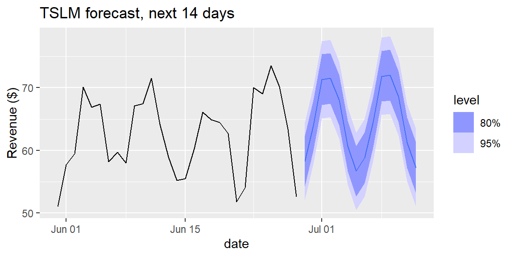

31Week 12: Regression-Based Forecasting, Accuracy, and Scenario Analysis
31.1 Why This Matters
Chapter 30’s methods all forecast a series using only its own past values. But regression, the very first tool of Module 4, already knows how to predict one variable from others, and time itself, or a category like day-of-week, is just another predictor. This section closes the loop: fitting a regression where the predictors are time-based, formalizing how forecast accuracy and forecast intervals are actually judged, and using a fitted forecasting model to reason about alternative future scenarios, exactly the skill the module’s live session and the Ceres Gardening Company case will ask you to apply.
31.2 Regression-Based Forecasting
A time-series regression models the response as a function of time-based predictors, most commonly a trend term and seasonal indicators, using ordinary least squares, precisely the machinery from Chapter 21 and Chapter 24. fable’s TSLM() (Time Series Linear Model) fits this the same way lm() does.
ExampleExample 12.14: Regression on trend and day of week
Rather than rely on fable’s automatically generated seasonal labels, build the day-of-week predictor directly, exactly the dummy-variable approach from Chapter 24, with Monday as a sensible reference:
The trend() coefficient, about 0.076 per day, matches Chapter 29’s simple regression on a day index almost exactly. Each dow coefficient is a dummy-variable comparison to Monday, exactly as in Chapter 24: Wednesday runs about $3.44 lower than Monday, Friday about $14.91 lower, and so on, with Tuesday statistically indistinguishable from Monday (\(p=0.887\)). The model’s adjusted \(R^2\) of 0.833 means trend and day-of-week together explain about 83% of the variability in daily revenue, in exactly the same sense as Chapter 23’s adjusted \(R^2\).
ImportantForecasting with an external predictor requires future values of it
trend() and fable’s built-in season() can project themselves forward automatically, the model knows a trend keeps climbing and a season keeps cycling. A predictor you build yourself, like dow, is different: forecast() needs to be told its future values explicitly, via new_data(), since nothing about a plain factor column tells the software what comes next.
This is a completely general lesson, not specific to day-of-week: any forecasting model built on external predictors (planned advertising spend, a known holiday calendar, scheduled staffing levels) needs those predictors’ future values supplied before it can forecast forward at all.
fc_tslm |>autoplot(coffee |>filter(date >as.Date("2024-05-30"))) +labs(title ="TSLM forecast, next 14 days", y ="Revenue ($)")

31.3 Forecast Accuracy, Formalized
Chapter 30 already used accuracy() without defining its columns precisely. For a forecast \(\hat{y}_t\) and actual value \(y_t\), the forecast error is \(e_t = y_t - \hat{y}_t\). Three common summaries: \[
\text{MAE} = \text{mean}(|e_t|) \qquad
\text{RMSE} = \sqrt{\text{mean}(e_t^2)} \qquad
\text{MAPE} = \text{mean}\left(\left|\frac{e_t}{y_t}\right|\right)\times 100\%
\] MAE and RMSE are in the response’s original units (dollars, here); RMSE penalizes large errors more heavily than MAE, since squaring an error makes big misses count disproportionately. MAPE expresses error as a percentage, unit-free, which makes it useful for comparing forecast quality across series measured in different units or scales, but it becomes unreliable when actual values are close to zero (dividing by a tiny \(y_t\) inflates the percentage wildly).
ExampleExample 12.15: Comparing every method built so far
Using the same train/test split as Chapter 30 (train through June 14, evaluate the last 14 days):
Regression-based forecasting (MAPE about 5.82%) performs about as well as Holt-Winters (5.68%) and seasonal naive (5.55%), all dramatically ahead of plain naive (12.9%). No single method wins by a wide margin here, precisely because Chapter 30 already established that this series’ weekly pattern is strong and stable enough for several reasonable methods to capture it about equally well.
31.4 Forecast Intervals and the Horizon
A forecast interval should generally widen the further into the future it reaches, more time between “now” and the forecasted period means more opportunity for the unknown to diverge from the model’s assumptions.
ExampleExample 12.16: How much does the interval actually widen?
The interval does widen, but only modestly over a realistic planning horizon: about $12.33 wide one day out, barely different ($12.34) two weeks out, and still only about $13.07 wide a full 180 days out, roughly 6% wider than at the start. This is honest, not disappointing: with 180 days of stable history underpinning both the trend and the seasonal pattern, the model is already quite confident about the near-to-medium future.
NoteA narrow-looking interval is not the same as a safe forecast
Notice that forecasting 180 days ahead uses exactly as much new information as forecasting 1 day ahead, none, both simply extrapolate the same fitted pattern forward. The interval’s modest growth reflects the formula’s assumptions holding, not a guarantee that they actually will. Forecasting a horizon as long as the data history itself (180 days out, on 180 days of history) is exactly the kind of extrapolation Chapter 21 and Chapter 26 warned about: the formula will still produce a number, but nothing in the data confirms the pattern really continues that far out.
31.5 Scenario and Sensitivity Analysis
Every forecast so far has assumed the fitted trend and seasonal pattern simply continue. A scenario analysis asks instead: what if the underlying trend itself changes? This is exactly the judgment call a manager makes when planning under uncertainty, and it’s the central skill the Ceres Gardening Company case will ask you to apply.
ExampleExample 12.17: Base, optimistic, and pessimistic growth scenarios
The fitted trend is about $0.076 per day. What would revenue on a specific future date (Thursday, September 26, about 90 days out) look like under three different assumptions about how that growth continues?
coefs <-tidy(fit_tslm)b0 <- coefs$estimate[coefs$term =="(Intercept)"]base_slope <- coefs$estimate[coefs$term =="trend()"]thu_offset <- coefs$estimate[coefs$term =="dowThursday"]t_future <-180+90# 90 days past the end of the datascenarios <-tibble(scenario =c("Pessimistic (half the trend)", "Base case (fitted trend)", "Optimistic (1.5x the trend)"),slope_used =c(0.5, 1.0, 1.5) * base_slope) |>mutate(forecast = b0 + slope_used * t_future + thu_offset)scenarios
# A tibble: 3 × 3
scenario slope_used forecast
<chr> <dbl> <dbl>
1 Pessimistic (half the trend) 0.0380 56.8
2 Base case (fitted trend) 0.0759 67.1
3 Optimistic (1.5x the trend) 0.114 77.4
Three genuinely different pictures of the same future Thursday emerge from one assumption: $56.85 if growth slows to half its historical pace, $67.10 if it simply continues, or $77.35 if it accelerates by half again, a $20 range driven entirely by one uncertain input. This is exactly what “scenario analysis” means in practice: holding everything else in the model fixed (the day-of-week pattern), varying the one assumption that’s genuinely uncertain (how the trend behaves going forward), and reporting the resulting range rather than a single falsely-precise number.
TipSensitivity analysis is scenario analysis applied systematically
Where a scenario analysis usually picks a small number of named cases (pessimistic, base, optimistic), a sensitivity analysis more systematically varies one input across a range (for example, plotting the 90-day forecast for every growth rate from 0% to 200% of the fitted trend) to see how sensitive the final answer is to that one assumption. If the forecast barely changes across a wide range of plausible inputs, the business decision is robust to that uncertainty; if it swings wildly, as it does here, that input deserves real scrutiny (and real hedging) before committing to a plan built on it.
31.6 Introducing the Ceres Gardening Company Case
Module 5 culminates in a real case: Ceres Gardening Company, a business facing a decision this module’s entire toolkit was built for. Ceres must evaluate a proposed growth strategy and prepare cash-flow projections to bring to its bank, and the case’s own numbers only come at an annual frequency, far too coarse on their own for the moving-average, exponential-smoothing, and regression-based tools this module just built. The live session supplements Ceres’s annual figures with monthly business data, so the same tools practiced on the coffee shop series can be applied at a business-realistic cadence.
Two ideas from this module sit at the center of the case:
Revenue growth is not the same as cash-flow health. A growing company can still run out of cash if its growth outpaces its financing, exactly why Ceres needs projections, not just a growth rate, to bring to a lender.
Base, optimistic, and pessimistic scenarios, precisely Example 12.17’s approach, let Ceres (and its bank) reason about a range of plausible financing needs rather than a single, falsely-precise forecast.
31.7 Computing Regression-Based Forecasts in R and Excel
ExampleExample 12.18: TSLM in R and Excel
In R, TSLM() fits the model and forecast(new_data = ...) projects it forward, both shown above.
In Excel, a time-series regression is just a regression with a period-number column and dummy columns for season, fit with the Data Analysis ToolPak’s Regression tool exactly as in Chapter 24, then extended forward by plugging future period numbers and season dummies into the fitted equation by hand.
31.8 Recap
Keyword
Definition
Time-series regression (TSLM)
Regression with time-based predictors (trend, season); fit with fable::TSLM(), identical in spirit to Chapter 21 and Chapter 24.
Forecast error
\(e_t = y_t - \hat{y}_t\).
MAE
\(\text{mean}(\lvert e_t\rvert)\); average absolute error, in the response’s original units.
RMSE
\(\sqrt{\text{mean}(e_t^2)}\); penalizes large errors more than MAE.
MAPE
\(\text{mean}(\lvert e_t/y_t\rvert)\times100\%\); unit-free, but unreliable near \(y_t=0\).
Forecast interval widening
Intervals generally widen with the forecast horizon; the amount of widening depends on how much history and how stable the pattern is.
Scenario analysis
Forecasting under a small number of named alternative assumptions (e.g., pessimistic/base/optimistic) about an uncertain input.
Sensitivity analysis
Systematically varying one uncertain input across a range to see how much the resulting forecast or decision actually changes.
31.9 Check Your Understanding
NoteProblems
A company builds a regression forecasting weekly sales from a trend term and a 4-level “region” dummy variable. Explain why forecasting next week’s sales for a specific region requires more than just calling forecast() with an automatically-generated trend.
A forecast has actual values \(y_1=50, y_2=42, y_3=61\) and forecasts \(\hat{y}_1=48, \hat{y}_2=45, \hat{y}_3=58\). Compute MAE and RMSE. Which is larger, and why does that make sense given the individual errors?
Explain why MAPE would be a poor choice for comparing forecast accuracy on a series that sometimes takes values very close to zero.
A company assumes its fitted growth trend simply continues and forecasts $1.2 million to lenders. A colleague asks what happens if growth is only two-thirds as fast, or 25% faster. What kind of analysis answers that question, and why is it more useful to a lender than the single $1.2 million figure alone?
Why is revenue growth not, by itself, evidence of good cash-flow health? What kind of company might grow quickly and still run into a cash shortfall?
TipSolutions
The region variable is an external predictor the analyst constructed, not one of fable’s automatically-projecting specials like trend() or season(). Software has no way to know what the “region” value will be next week on its own (it isn’t a pattern that mechanically continues the way a trend or season does), so it must be supplied explicitly via new_data() before a forecast can be produced.
Errors: \(e_1=2, e_2=-3, e_3=3\). \(\text{MAE}=(2+3+3)/3=8/3\approx2.67\). \(\text{RMSE}=\sqrt{(4+9+9)/3}=\sqrt{22/3}\approx2.71\). RMSE is (slightly) larger, because squaring gives relatively more weight to the two larger errors (magnitude 3) relative to the smaller one (magnitude 2), while MAE weights all three equally regardless of size.
MAPE divides each error by the corresponding actual value, \(y_t\). When \(y_t\) is very close to zero, that division produces a huge (or undefined) percentage even for a small absolute error, distorting the average and making the metric unreliable exactly where it’s needed most.
This calls for a scenario analysis (or, done more systematically across a full range of growth assumptions, a sensitivity analysis). It’s more useful to a lender than a single number because it reveals how much the projection actually depends on one uncertain assumption (the future growth rate), letting the lender see a defensible range of financing needs rather than false precision that could turn out badly wrong if growth doesn’t match the base-case assumption exactly.
Revenue growth measures how much a company is selling; cash-flow health measures whether it actually has enough cash on hand, at the right times, to cover its own obligations (payroll, suppliers, debt payments). A rapidly growing company that must spend heavily upfront on inventory or receivables before collecting cash from customers (a common pattern for a fast-growing retailer or manufacturer extending customer credit) can be profitably growing on paper while still running short of actual cash, exactly the tension Ceres’s bank will want addressed with real cash-flow projections, not just a revenue growth rate.